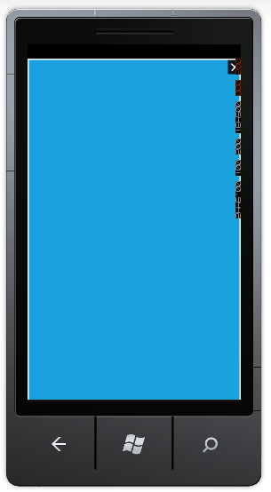

Dialog control provides support to set dialog box in full screen mode.
Setting Full Screen Mode
To enable full screen mode, set the IsFullScreen property of the Dialog to true. Default value is false.
The following code illustrates how to set dialog box in full screen mode:
|
[xaml]
</syncfusion:Dialog> |
|
[C#] Dialog dialogFullScreen = new Dialog() { IsFullScreen = true, IsBackKeyClose = true, };
|

Figure 88: Dialog in Full Screen Mode